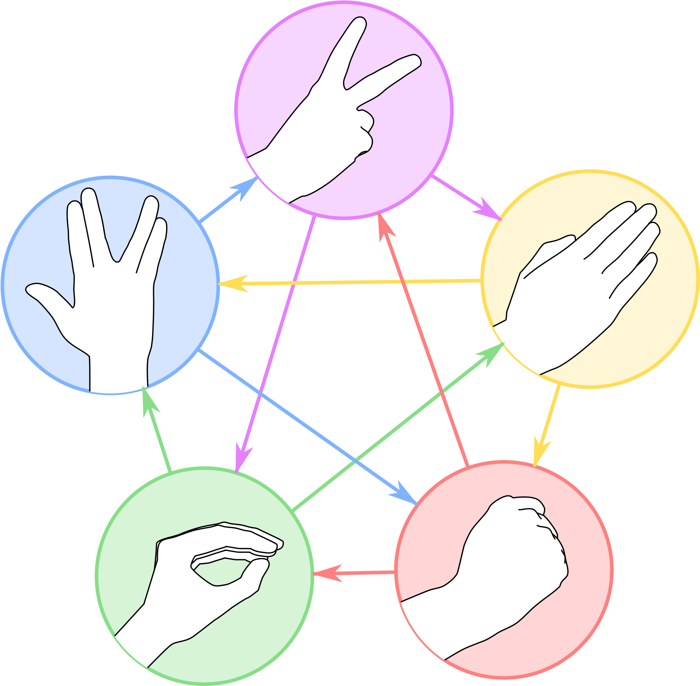

Rock-paper-scissors-lizard-Spock is a five-gesture expansion of the classic selection method game rock-paper-scissors. It operates on the same basic principle, but includes two additional weapons: the lizard (formed by the hand as a sock-puppet-like mouth) and Spock (formed by the Star Trek Vulcan salute).
